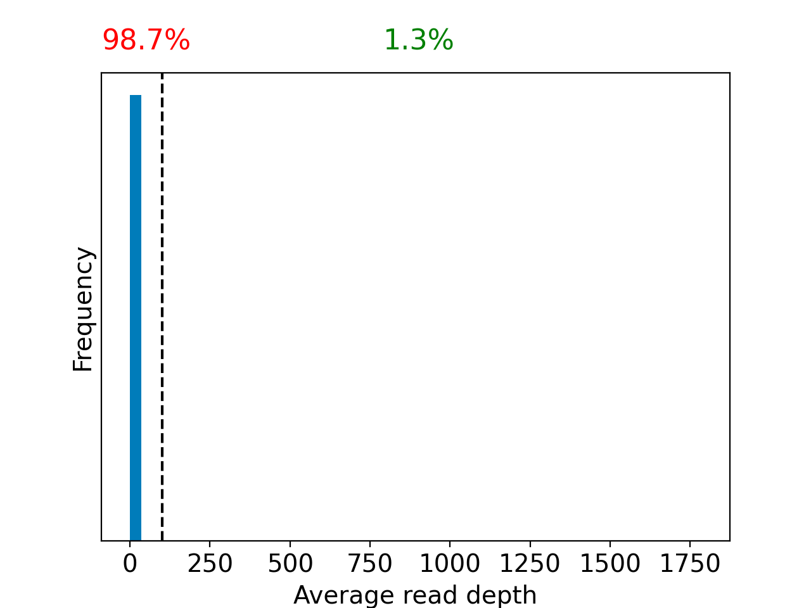
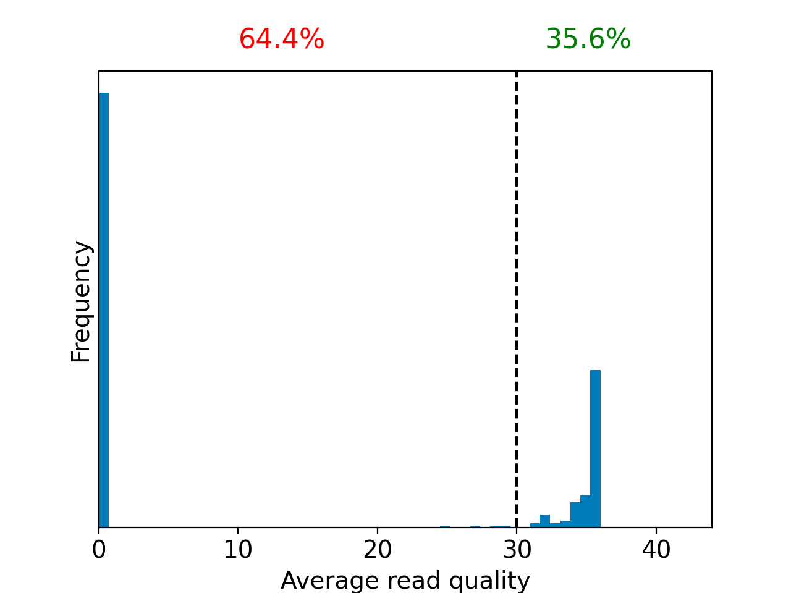
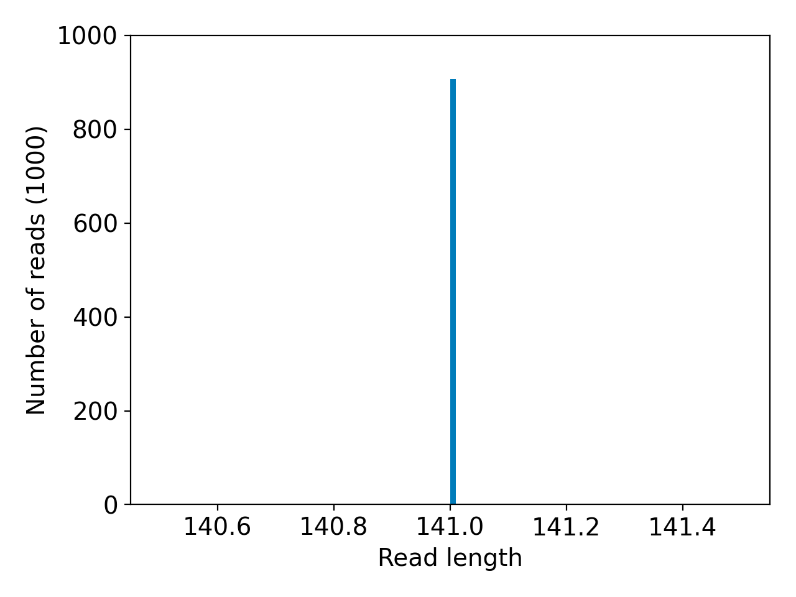
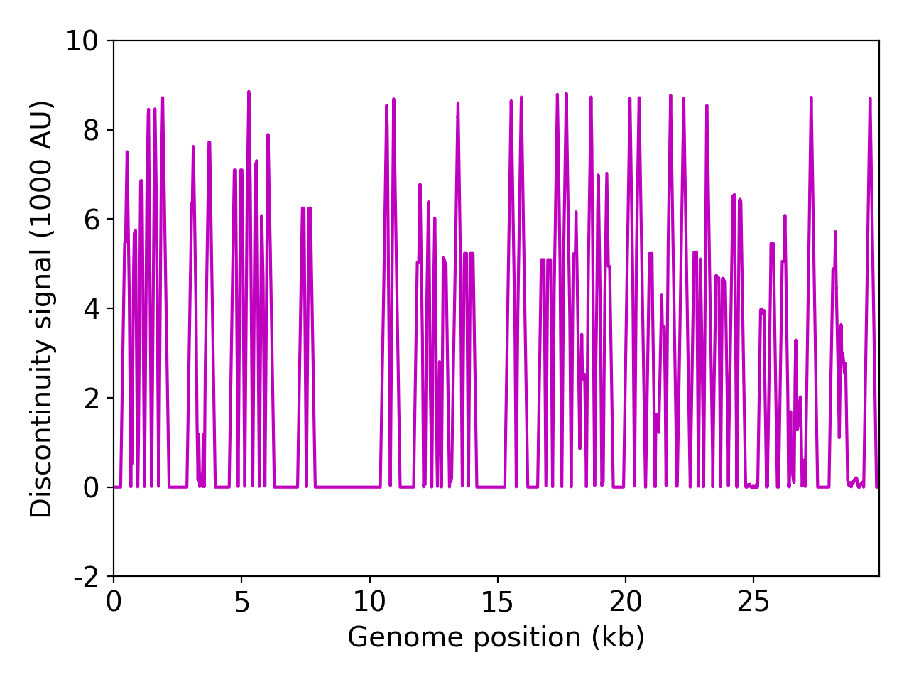

| Sample name: | SRR16828013 |
| Date generated: | 2022-02-15, 15:52:33 EST |
| Executed by: | Tunc Kayikcioglu (Tunc.Kayikcioglu@fda.hhs.gov) |
| Sequencing chemistry: | AMPLICON with NextSeq 500 |
| Source site: | Missing (?,?) |
| Sampling date: | Missing |
| Collected by: | Missing |
| Sequenced by: | Missing |
| Total number of reads: | 906676 |
| Reads aligned: | 3476 (0%) |
| Average read quality: | 34.6 |
| Average read length: | 141 |
| Reads passing filter: | 3399 (0%) |
| Average read quality passing filter: | 34.7 |
| Average read length passing filter: | 141 |
| Average coverage passing filter: | 16X |
NOTE: The red shaded areas marked with a (*) are not covered by the design of the library preparation kit and hence excluded from analyses. Magenta curves represent moving average with a window width of 1kb.




| # uncovered genomic coordinates (0X) by kit design: | 0 nt (0%) |
| # uncovered genomic coordinates (0X): | 18832 nt (62%) |
| # poorly covered genomic coordinates (<10X): | 28129 nt (94%) |
| Hits to SARS-Cov2 genome (kraken2): | 3577 reads (0.79%) |
| Hits to human genome (kraken2): | 1968 reads (0.43%) |
| Hits to synthetic sequences (kraken2, taxid 28384): | 113 reads (0.02%) |
Based on deconvolution, wt is estimated to constitute 74.98% of the viral particles and hence is the most abundant variant in the sample. The R2 for the linear regression was 0.20. Variants that were detected less than 5% were grouped under "Other"
Based on the consensus sequence of the observed reads, the "ensemble-averaged sequence" most closely resembles the Alpha Beta Delta Eta Iota Kappa Mu Epsilon Epsilon Omicron lineage. If this is a sample consisting of a single source of pathogens or an overwhelming majority of the different sources are infected with the same variant, the sample is dominated by this variant.
Based on mapping individual reads to the variant consensus sequences in the reference database, kallisto predicts that the sample is dominated by wt lineage. Accuracy of this measure is expected to improve if the input data consists of long reads as opposed to convolution.
Under the assumption that the presence of a variant requires the detection of all respective mutations of the variant, the characteric mutations which support the presence of the respective variant are indicated in the respective column of the table. Numbers show the number of mutations detected, if any, and the number of mutations expected to be present based on the variant definitions.
| VOC | Beta | Gamma | B.1.617.2+K417N | Alpha | Delta |
| Characteristic mutations detected | (0 of 14) | (0 of 16) | (0 of 13) | (0 of 23) | (0 of 13) |
| VUI | B.1.617.3 | Zeta | B.1.617.1 | A.23.1+E484K | Eta | Theta | B.1.1.318 |
| Characteristic mutations detected | (0 of 17) | (0 of 7) | (0 of 11) | (0 of 13) | (0 of 16) | (0 of 17) | (0 of 19) |
| Position | Ref. base | Alt. base | Alt. freq | p-value | Mutation name | Compatible lineages |
|---|---|---|---|---|---|---|
| 23403 | A | G | 0.778 | 2.03E-07 | S:D614G | Omicron, Epsilon, Lambda, Epsilon, Iota, AV1, Mu |
| 24076 | T | C | 0.278 | 7.89E-03 | NUC:T24076C | None found |
| 29133 | G | T | 0.320 | 1.63E-03 | N:G287V | None found |
| 29135 | G | T | 0.342 | 2.67E-06 | N:D288Y | None found |
| 29136 | A | G | 0.225 | 7.92E-04 | N:D288G | None found |
| 29137 | C | T | 0.436 | 1.48E-08 | NUC:C29137T | None found |
| 29138 | C | T | 0.100 | 7.24E-03 | N:Q289* | None found |
| 29140 | G | +A | 0.203 | 1.03E-04 | NUC:G29140+A | None found |
| 29141 | G | T | 0.072 | 9.38E-03 | N:E290* | None found |
| 29142 | A | T | 0.093 | 2.13E-03 | N:E290V | None found |
| 29143 | A | T | 0.246 | 1.15E-09 | N:E290D | None found |
| 29144 | C | T | 0.062 | 3.07E-03 | NUC:C29144T | None found |
| 29145 | T | G | 0.267 | 7.94E-10 | N:L291R | None found |
| 29146 | A | T | 0.172 | 7.98E-09 | NUC:A29146T | None found |
| 29147 | A | G | 0.131 | 2.10E-06 | N:I292V | None found |
| 29148 | T | A | 0.143 | 3.37E-07 | N:I292N | None found |
| 29149 | C | G | 0.139 | 6.28E-08 | N:I292M | None found |
| 29150 | A | T | 0.113 | 3.06E-06 | N:R293* | None found |
| 29151 | G | +T | 0.070 | 7.52E-04 | NUC:G29151+T | None found |
| 29153 | C | T | 0.120 | 5.08E-10 | N:Q294* | None found |
| 29156 | G | +A | 0.052 | 3.45E-03 | NUC:G29156+A | None found |
| 29157 | G | A | 0.053 | 2.10E-05 | N:G295E | None found |
| 29158 | A | G | 0.050 | 3.28E-05 | NUC:A29158G | None found |
| 29161 | T | G | 0.056 | 4.36E-06 | NUC:T29161G | None found |
| 29276 | G | T | 0.052 | 2.80E-18 | N:G335C | None found |
| 29384 | G | T | 0.543 | 0.00E+00 | N:D371Y | None found |
| 29508 | G | +C | 0.055 | 1.61E-07 | NUC:G29508+C | None found |
| 29510 | A | T | 0.087 | 4.77E-16 | N:S413C | None found |
| 29512 | T | +C | 0.051 | 1.49E-05 | NUC:T29512+C | None found |
| 29513 | G | T | 0.072 | 1.31E-12 | N:A414S | None found |
| 29516 | G | T | 0.078 | 4.81E-11 | N:D415Y | None found |
| 29519 | T | A | 0.096 | 4.65E-13 | N:S416T | None found |
| 29520 | C | +TGT | 0.057 | 3.30E-03 | NUC:C29520+TGT | None found |
| 29521 | A | T | 0.132 | 2.92E-08 | NUC:A29521T | None found |
| 29522 | A | T | 0.487 | 1.55E-34 | N:T417S | None found |
| 29525 | C | T | 0.111 | 3.10E-07 | N:Q418* | None found |
| 29526 | A | T | 0.200 | 1.40E-07 | N:Q418L | None found |
| 29527 | G | T | 0.494 | 4.83E-23 | N:Q418H | None found |
| 29528 | G | T | 0.139 | 1.23E-04 | N:A419S | None found |
| 29530 | C | T | 0.404 | 1.45E-07 | NUC:C29530T | None found |
| 29531 | T | G | 0.303 | 1.46E-04 | N:*420E | None found |
| 29533 | A | T | 0.667 | 4.88E-08 | N:*420Y | None found |
| 29536 | T | A | 1.000 | 9.61E-08 | NUC:T29536A | None found |